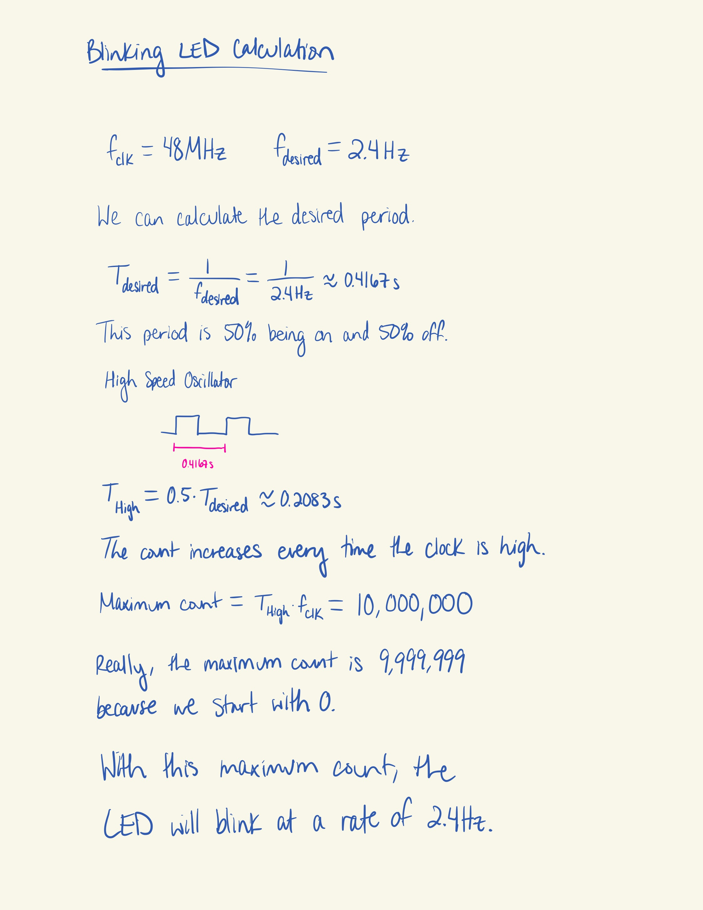
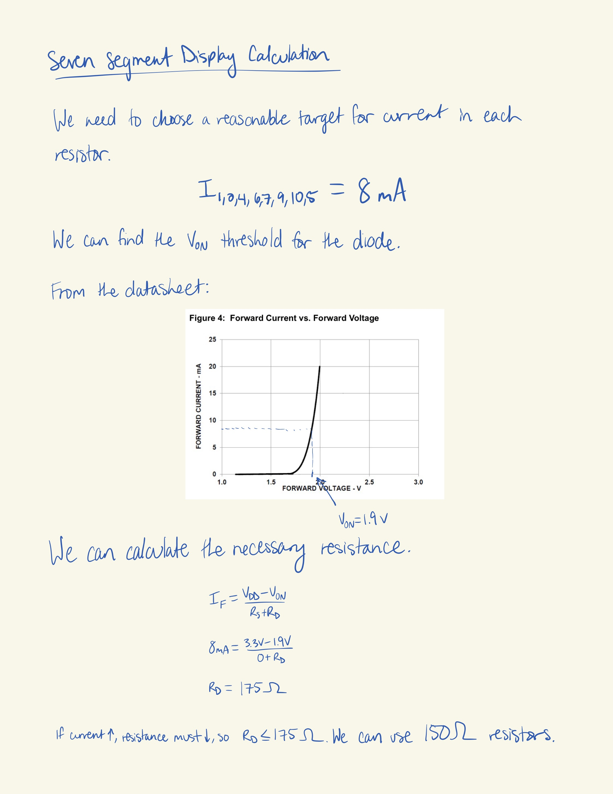
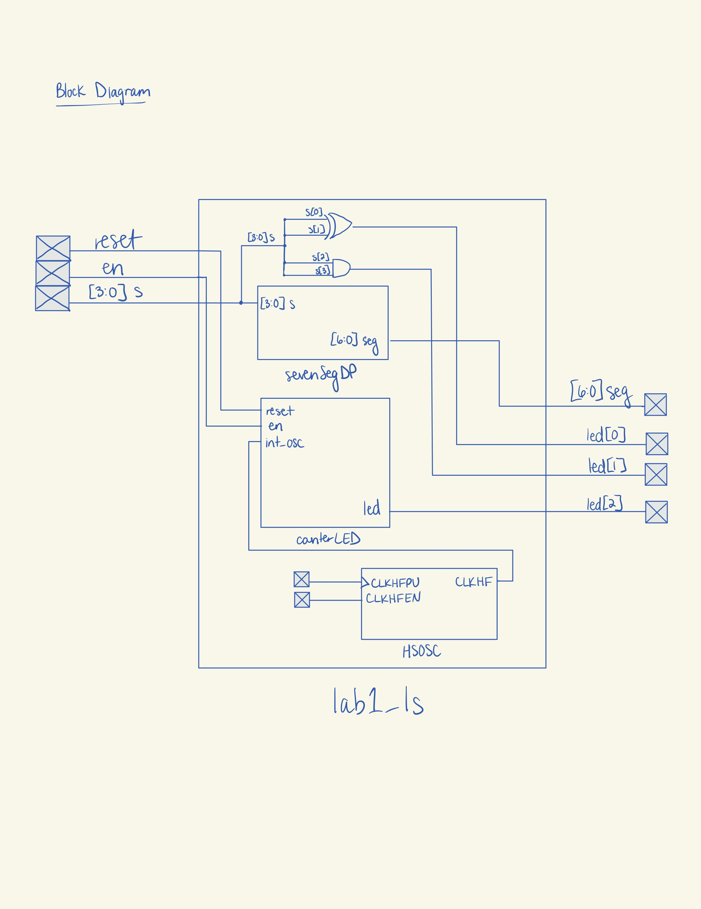
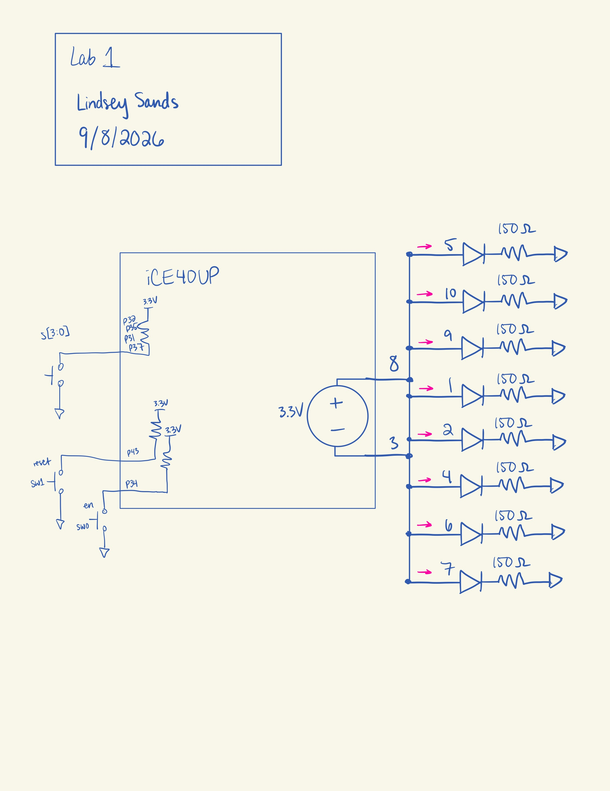
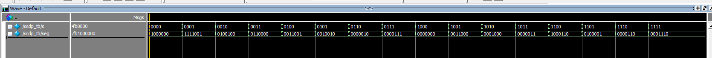
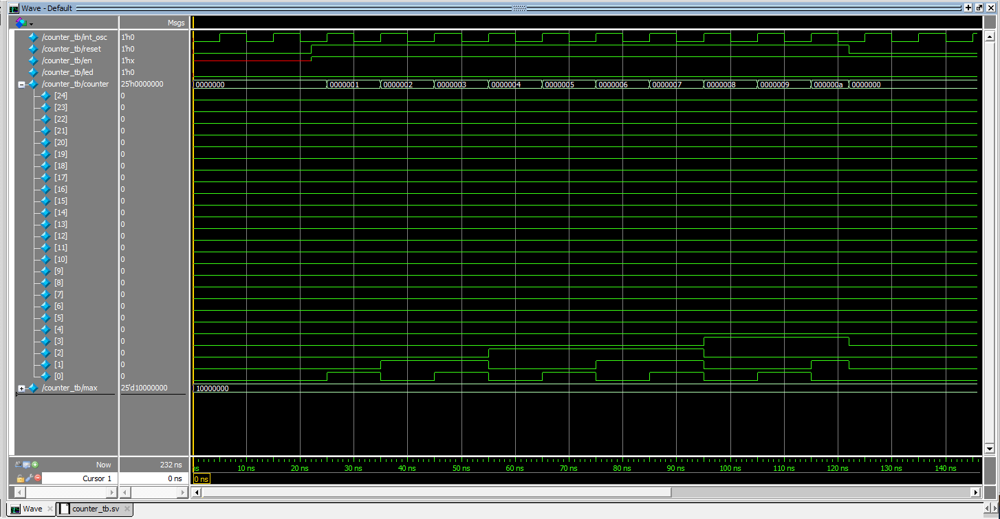
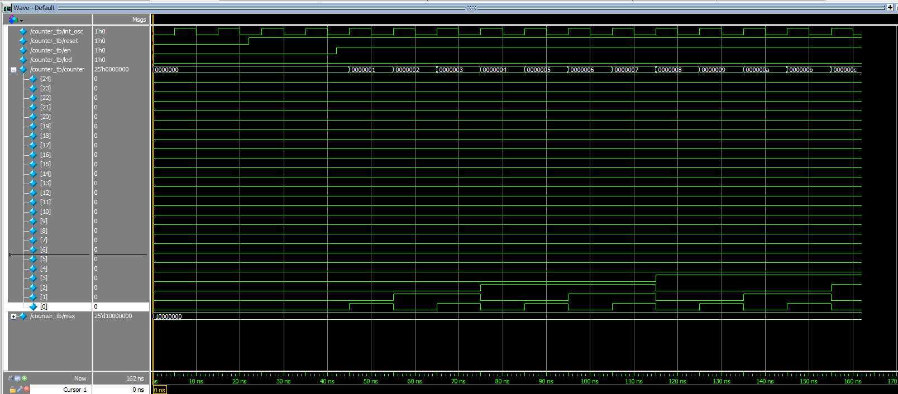
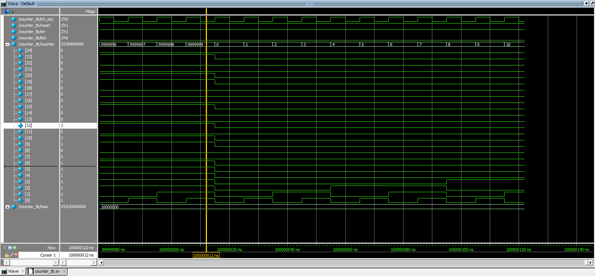
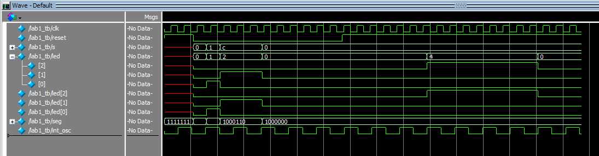

Lab 1
Introduction
In this lab, an FPGA was programmed to control multiple LEDs. One LED blinked at 2.4 Hz. Two other LEDs executed AND and XOR operations based on a 4-bit switch input. Finally, the last 7 LEDs were part of a seven segment display and are configured to display the hex digits from 0x0 to 0xF based on the same switch input.
Design and Testing Methodology
For the blinking LED, a 48 MHz clock signal was generated from the on-board high-speed oscillator (HSOSC) from the iCE40 UltraPlus primitive library.
The necessary maximum count for a counter module was calculated in order to turn the 48 MHz input into the 2.4 Hz output, as shown in Figure 1 below.

Using this calculation, a counter module was designed with parameters of width and maximum count set to 24’d10_000_000 and 25, respectively. The counter module also has reset and enable functionality.
Additionally, there were calculations performed to figure out the proper pull-down resistor size for the seven segment display LEDs. Using the information from the data, a target current draw of 8mA was chosen.

A standard resistor size of 150 Ω based on the calculation in Figure 2.
The top module handles the logic of the last two LEDs, assigning the XOR and AND logic. The top module is also where the HSOSC, counter, and seven segment display modules are all integrated together.
Technical Documentation
The source code for the project can be found in the associated Github repository.
Code: ::: {.callout-caution collapse=“true” title=“Click for Questa Simulation”} // Lindsey Sands // lsands@g.hmc.edu // 09-06-2026 // This is the top module for E155 Lab 1. module lab1_ls(input logic reset, en, input logic[3:0] s,
output logic[2:0] led,
output logic[6:0] seg);
logic int_osc;
// Internal high-speed oscillator
HSOSC #(.CLKHF_DIV(2'b00))
clk (.CLKHFPU(1'b1), .CLKHFEN(1'b1), .CLKHF(int_osc));
// Seven Segment Display module instantiation
sevenSegDP dp(s, seg);
// led[0] = s[1] XOR s[0]
assign led[0] = s[1] ^ s[0];
// led[1] = s[3] AND s[2]
assign led[1] = s[3] && s[2];
// led[2] blinks at 2.4Hz
counterLED counter(int_osc, reset, en, led[2]);endmodule
// Lindsey Sands // lsands@g.hmc.edu // 09-06-2026 // This is the Seven Segment Display module. It takes a binary input value and // outputs the right LED configuration to visually represent the hex digit (0x0-0xF) module sevenSegDP(input logic[3:0] s, output logic[6:0] seg);
always_comb
case(s)
4'b0000: seg = 7'b1000000; // 0
4'b0001: seg = 7'b1111001; // 1
4'b0010: seg = 7'b0100100; // 2
4'b0011: seg = 7'b0110000; // 3
4'b0100: seg = 7'b0011001; // 4
4'b0101: seg = 7'b0010010; // 5
4'b0110: seg = 7'b0000010; // 6
4'b0111: seg = 7'b0000111; // 7
4'b1000: seg = 7'b0000000; // 8
4'b1001: seg = 7'b0011000; // 9
4'b1010: seg = 7'b0001000; // A
4'b1011: seg = 7'b0000011; // b
4'b1100: seg = 7'b1000110; // C
4'b1101: seg = 7'b0100001; // d
4'b1110: seg = 7'b0000110; // E
4'b1111: seg = 7'b0001110; // F
default: seg = 7'b1111111;
endcase
endmodule
// Lindsey Sands // lsands@g.hmc.edu // 09-06-2026 // This is the counter module for E155 Lab 1. It blinks an LED at 2.4Hz. // The code is based on the demo at // https://hmc-e155.github.io/tutorials/tutorial-posts/lattice-radiant-ice40-ultraplus-project-setup/ module counterLED #(parameter width = 25, parameter max = 24’d10_000_000) (input logic int_osc, reset, en, output logic led);
logic [width-1:0] counter;
// Counter
always_ff@(posedge int_osc, negedge reset) begin
// Reset count if reset button pushed or count gets to maximum value
// Reset is active LOW
if((reset == 0)||(counter == max-1)) counter <= 0;
// Increment counter the same if enable is on
else if(en) counter <= counter + 1;
else counter <= counter;
end
// Assign LED output
assign led = counter[width-1];endmodule
Test benches: // Lindsey Sands // lsands@g.hmc.edu // 9/7/2026 // This is the testbench for the Lab 1 top module. `timescale 1 ns/1 ns
module lab1_tb(); logic clk; // system clock logic reset; // active high reset logic [3:0] s; // 4-bit input switches logic [2:0] led; // 3 output leds logic [6:0] seg; // seven segment display logic int_osc; logic counter; logic en;
assign en = 1;
lab1_ls dut (
.reset(reset),
.en(en),
.s(s),
.led(led),
.seg(seg)
);
HSOSC #(.CLKHF_DIV(2'b00))
dut2 (.CLKHFPU(1'b1), .CLKHFEN(1'b1), .CLKHF(int_osc));// generate clock always begin clk = 0; #5; clk = 1; #5; end
// apply stimuli and check outputs initial begin reset = 1; #22 reset = 0;
// No-LED test
s = 4'b0000; // setup inputs
#10; // wait required time
assert (led == 2'b00) // check outputs
else
$error("No-LED test failed.");
// LED[0] test
s = 4'b0001;
#10;
assert (led == 2'b01)
else
$error("LED[0] test failed.", $time);
// LED[1] test
s = 4'b1100;
#10;
assert (led == 2'b10)
else
$error("LED[1] test failed.", $time);
// HSOSC test
#22;
assert (int_osc == 1)
else
$error("HSOSC failed.", $time);
// Seven Segment Display integration test
s = 4'b0000;
#10;
assert (seg == 7'b1000000)
else
$error("Seven segment display integration failed.", $time);
// Counter integration test
reset = 0;
#50 reset = 1;
#80
assert (led[2] == 1)
else
$error("Counter integration failed.", $time);
#100 $stop;end endmodule
// Lindsey Sands // lsands@g.hmc.edu // 9/7/2026 // This is the testbench for the counter module. `timescale 1 ns/1 ns
module counter_tb(); logic int_osc; logic reset; // active high reset logic en; // enable logic led; // output LED logic [24:0] counter; // counter logic [24:0] max; // max count
assign max = 24'd10_000_000;
counterLED dut(
.int_osc(int_osc),
.reset(reset),
.en(en),
.led(led)
);
// generate clock
always begin
int_osc = 0; #5;
int_osc = 1; #5;
end
// Counter
always_ff@(posedge int_osc, negedge reset) begin
// Reset count if reset button pushed or count gets to maximum value
// Reset is active LOW
if((reset == 0)||(counter == max-1)) counter <= 0;
// Increment counter the same if enable is on
else if(en) counter <= counter + 1;
else counter <= counter;
end
// apply stimuli and check outputs
initial begin
// verify reset (Reset is active low)
reset = 0;
#22 reset = 1;
en = 1;
#100; // wait required time
assert (counter > 0) // check outputs
else
$error("Reset test 1 failed.");
reset = 0;
#10;
assert (counter == 0) // check outputs
else
$error("Reset test 2 failed.");
// verify enable
reset = 0;
en = 0;
#22 reset = 1;
#50;
assert (counter == 0)
else
$error("Enable test 1 failed.");
en = 1;
#50;
assert (counter != 0)
else
$error("Enable test 2 failed.");
// verify max count
reset = 0;
#22 reset = 1;
en = 1;
#100_000_000;
assert (counter == 0)
else
$error("Max count test failed.");
#100 $stop;
endendmodule
// Lindsey Sands // lsands@g.hmc.edu // 9/7/2026 // This is the testbench for the seven segment display module. // It covers every single case of input bits. `timescale 1 ns/1 ns
module ssdp_tb(); logic [3:0] s; // 4 input bits logic [6:0] seg; // Seven segment display LEDs
// instantiate device under test
sevenSegDP dut(.s(s),
.seg(seg));
// apply inputs one at a time
// checking results
initial begin
s = 4'b0000; #10;
assert (seg == 7'b1000000) else $error("0000 (0) failed.");
s = 4'b0001; #10;
assert (seg==7'b1111001) else $error("0001(1) failed.");
s = 4'b0010; #10;
assert (seg== 7'b0100100) else $error("0010(2) failed.");
s = 4'b0011; #10;
assert (seg== 7'b0110000) else $error("0011(3) failed.");
s = 4'b0100; #10;
assert (seg== 7'b0011001) else $error("0100(4) failed.");
s = 4'b0101; #10;
assert (seg== 7'b0010010) else $error("0101(5) failed.");
s = 4'b0110; #10;
assert (seg== 7'b0000010) else $error("0110(6) failed.");
s = 4'b0111; #10;
assert (seg== 7'b0000111) else $error("0111(7) failed.");
s = 4'b1000; #10;
assert (seg== 7'b0000000) else $error("1000(8) failed.");
s = 4'b1001; #10;
assert (seg== 7'b0011000) else $error("1001(9) failed.");
s = 4'b1010; #10;
assert (seg== 7'b0001000) else $error("1010(A) failed.");
s = 4'b1011; #10;
assert (seg== 7'b0000011) else $error("1011(b) failed.");
s = 4'b1100; #10;
assert (seg== 7'b1000110) else $error("1100(C) failed.");
s = 4'b1101; #10;
assert (seg== 7'b0100001) else $error("1101(d) failed.");
s = 4'b1110; #10;
assert (seg== 7'b0000110) else $error("1110(E) failed.");
s = 4'b1111; #10;
assert (seg== 7'b0001110) else $error("1111(F) failed.");
#100 $stop;
endendmodule ::: # Block Diagram

Schematic

Results and Discussion
Testbench Simulation
All of the testbenches ran successfully with no errors.

All 16 LED configurations work.

The active low reset functionality sets the counter back to zero.
When high, enable allows the counter to increment. When low, the counter stays at the same value unless reset is pressed.

When the counter reaches the maximum count, instead of continuing to count up, it resets to 0.

All of the integrated modules and LED logic works.
Conclusion
TODO: Did everything work? I spent about 25-30 hours on this lab.
AI Prototype SummaryI gave ChatGPT the promtp and it gave me this code:
module led_blink ( output logic led );
// UP5K internal high-frequency oscillator
logic clk;
SB_HFOSC #(
.CLKHF_DIV("0b00") // 48 MHz
) hfosc (
.CLKHFPU(1'b1), // Power up oscillator
.CLKHFEN(1'b1), // Enable oscillator
.CLKHF(clk)
);
// 48 MHz / (2 * 12,000,000) = 2 Hz
localparam int unsigned HALF_PERIOD = 12_000_000;
logic [23:0] counter;
always_ff @(posedge clk) begin
if (counter == HALF_PERIOD - 1) begin
counter <= '0;
led <= ~led;
end
else begin
counter <= counter + 1'b1;
end
endendmodule
However, this failed to simulate, so I asked it to fix it.
It gave me a new script but it asked for more detailed error messages. I could not find different error messages, so it could have been more helpful by telling me where to find them.